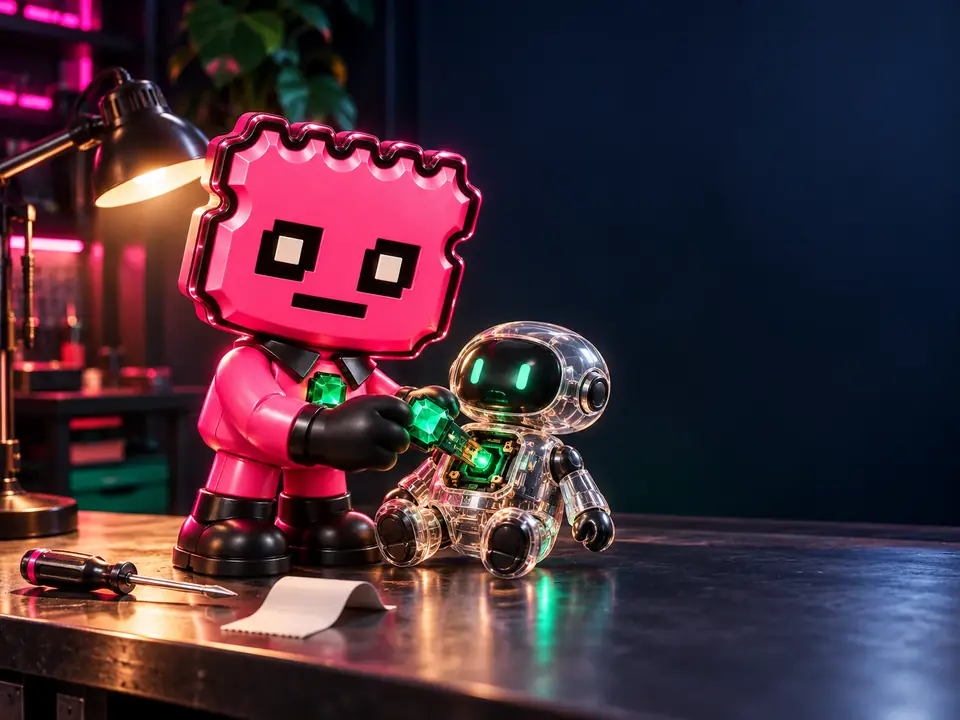
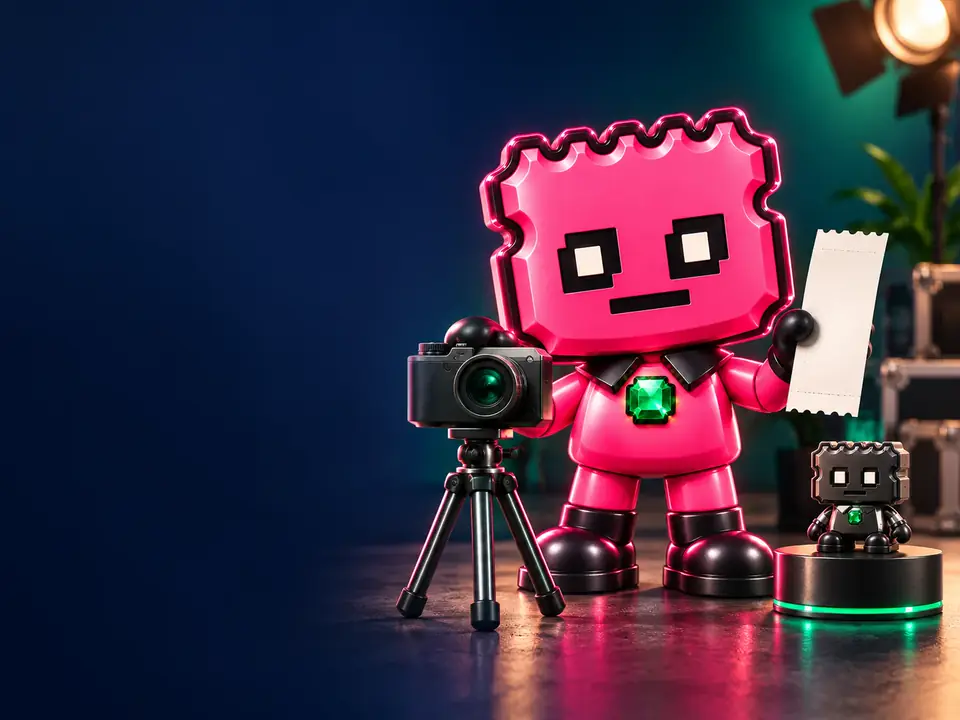

Un meme: Agente Talón
Un ticket rosa con una gema verde. Su lema: «No stub, no story» (sin talón, no hay historia). Pide pruebas a los agentes de IA antes de creer lo que dicen. Las imágenes del personaje se generan con IA.
Solana · Código abierto · Prototipo
STUBX es un personaje, Agente Talón, que ante cualquier promesa pregunta «¿dónde está la prueba?». Aquí verás qué funciona hoy, qué falta y cómo comprobarlo tú.
Compárala entera con la de la cuenta oficial en X: @stubxai. Cualquier otra CA con el nombre STUBX no es oficial. Cómo verificarla.
Cripto de alto riesgo · Puedes perderlo todo · No es consejo de inversión. Leer los riesgos
01 El proyecto
STUBX junta humor, transparencia y código abierto. Cada pieza se explica por separado para no mezclar la idea con lo que ya existe.
Un ticket rosa con una gema verde. Su lema: «No stub, no story» (sin talón, no hay historia). Pide pruebas a los agentes de IA antes de creer lo que dicen. Las imágenes del personaje se generan con IA.
Creado el 2026-09-23 en una plataforma pública de lanzamiento (ver canales). Sin autoridad de emisión ni de congelación y con metadatos que ya no se pueden cambiar. No da derechos de ningún tipo. Ver CA y transparencia.
Un agente de ejemplo en GitHub (licencia MIT) que no tiene wallet ni claves, no firma y no envía transacciones. Sirve para enseñar límites, un interruptor de apagado y un registro público.
Una aclaración importante. La descripción grabada en el token dice «AI-native memecoin». Esa frase no se puede cambiar (los metadatos son inmutables), pero hoy no hay ningún agente autónomo: es la idea del personaje, no una función. Lo que sí existe está en estado del agente.
02 Estado del agente
Comprobado el 2026-10-04 sobre el código público (commit e4faf6e, Node.js 22).
Si un dato cambia, se cambia aquí con su fecha.

npm ci && npm test.| Prueba | Estado | Qué falta para marcarla |
|---|---|---|
| Wallet pública del agente | No aplica · 05-10-2026 | No aplica desde el 05-10-2026: el agente no tiene wallet ni claves por diseño (decisión del creador). La wallet pública del proyecto (SOL) no cuenta para esta casilla: la controla el creador y solo se usa con SOL (GtYJ…QZoutA). Detalle: transparencia. |
| Logs hasheados o enlazables | Marcada · 05-10-2026 | Log público de solo añadir en logs/agent-log.jsonl, escrito por el workflow daily-log, con anclas selladas por OpenTimestamps. Prueba: entradas en main en al menos 7 días distintos (UTC); sello del ancla 2026-09-26-000001 confirmado en el bloque de Bitcoin 968752 (comprobado a mano; pasos en LOGS.md); ejecución pública del daily-log del 05-10. Marcada no significa que registre todo lo que hace el agente ni que lo anotado sea cierto. Bitcoin solo es el reloj; no respalda STUBX. Si la cadena o un sello dejan de cuadrar, se desmarca y se explica aquí. |
| Límites escritos | Marcada · 05-10-2026 | Límites escritos en LIMITS.md y aplicados en el código, cada uno con su test. Prueba: ejecución pública de la CI del 05-10 (commit a960380), todos los tests en verde, incluidos los 20 de límites. Marcada no significa auditada: un test en verde demuestra lo que ese test comprueba, en esa versión del código. Si una CI posterior falla en estos tests, se desmarca y se explica aquí. |
| Kill-switch documentado y testeable | Marcada · 05-10-2026 | Documentado en KILL-SWITCH.md. Simulacros públicos seguidos en verde: 26-09 (manual), 28-09 y 05-10 (programados). Con el interruptor activado o su archivo roto de 5 formas, se rechazan todas las acciones del agente. Solo para el agente: no pausa transferencias ni congela tokens o cuentas. Si un simulacro sale en rojo, se desmarca y se explica aquí. |
Una casilla solo se marca cuando su prueba está publicada y revisada, con el OK legal. A 2026-10-05: 3 de 4 marcadas · 1 no aplica (Wallet pública del agente: el agente no tiene wallet ni claves por diseño). Un test en verde demuestra lo que ese test comprueba, en esa versión del código; nada más.
03 CA oficial
Si no está en esta lista, no es STUBX. Canales oficiales y antiestafa.
Nota: la wallet pública del proyecto (SOL) (GtYJ…QZoutA) no tiene STUBX, no forma parte del suministro y no es una porción del gráfico. La controla el creador; no es multifirma. Solo se usa con SOL, para costes del proyecto. No da derechos a nadie y no acepta aportaciones. Ver Solscan y transparencia.
| Dónde está | STUBX | % del suministro |
|---|---|---|
| Curva pública de Pump.fun (contrato)3shQFE…toAE | 986.122.445,10 | 98,61 % |
| Wallet creadora77RKUq…wypD | 5.272.727,23 | 0,53 % |
| Wallet personal del creador2fS12s…iWvX | 8.604.827,67 | 0,86 % |
| Total | 1.000.000.000,00 | 100,00 % |
La foto cambia con cada compra o venta en la curva; datos a 03-10-2026 14:19 (Madrid). No dice nada sobre el precio ni es una recomendación. Fuente: RPC público de Solana (getTokenSupply y getTokenAccountsByOwner), bloques (slots) 452931336 a 452931342. Mismos datos en token.json (supplyDistribution). Cripto de alto riesgo · Puedes perderlo todo · No es consejo de inversión.

04 En X
Allí se publican los avances con su prueba: qué cambió, cómo se comprueba y qué falta. Cuenta oficial en X: @stubxai (enlace abajo).
05 Repositorio
Todo el código del agente está en github.com/stubxai/stubx-agent (licencia MIT). No hace falta ninguna clave ni wallet para probarlo.
git clone https://github.com/stubxai/stubx-agent cd stubx-agent npm ci npm test
Resultado esperado el 2026-10-04 (commit e4faf6e): 115 tests, 0 fallos. Si ves otra cifra, mira la fecha del último cambio en el repositorio.
06 Pruebas verificables
Para cada prueba: qué demuestra, qué no demuestra y dónde la compruebas sin fiarte de nosotros.
Demuestra: que el código hace lo que dicen sus 115 tests.
No demuestra: que no haya otros fallos.
Demuestra: que al activar el interruptor, o si su archivo falla, todas las acciones del agente se rechazan (el registro diario sigue, solo para anotarlo).
No demuestra: nada en la cadena: no pausa ni congela tokens. Tampoco que el agente sea seguro en cualquier situación: solo prueba los casos del simulacro.
Demuestra: que no se ha cambiado ninguna entrada antigua sin rehacer las siguientes (cada entrada lleva la huella de la anterior); con los sellos de tiempo, que no se han cambiado después de sellarse.
No demuestra: que esté completo ni que sea verdad. Los sellos de tiempo solo prueban que cada ancla ya existía a la hora de su bloque (8 confirmados a 2026-10-04). Bitcoin solo es el reloj; no respalda STUBX.
Demuestra: que el código no contiene funciones para firmar o enviar transacciones (escáner: 0 hallazgos).
No demuestra: nada sobre otras herramientas o personas.
Demuestra: que nadie puede crear más STUBX ni congelar cuentas.
No demuestra: nada sobre el precio o la liquidez.
Demuestra: que las copias de esta web son idénticas a las grabadas en el token (misma huella SHA-256).
No demuestra: que otras webs usen las mismas.
07 Roadmap con fechas
Lo hecho lleva fecha real. Lo siguiente lleva una fecha objetivo: puede cambiar y no es una promesa. No incluye precios, listados ni liquidez.
08 Riesgos
STUBX es un criptoactivo experimental de alto riesgo. No tiene valor garantizado, no da derechos de ningún tipo (propiedad, voto, dividendos, reembolso ni reparto de ingresos) y no se promete ninguna rentabilidad. Puede perder todo su valor: puedes perder todo lo que aportes. Hoy (comprobado el 2026-10-03) STUBX se negocia en la curva de Pump.fun: el propio contrato compra y vende sin necesitar a otra persona, pero cada venta baja el precio y las ventas grandes reciben peor precio. Si el precio cae, vender puede devolverte muy poco o casi nada. Si el token completa la curva, pasa de forma automática e irreversible a un fondo de liquidez de PumpSwap, con otras comisiones y el mismo riesgo de caída. Pump.fun o la red Solana pueden fallar, saturarse o limitar el acceso según el país, así que no siempre podrás vender cuando quieras. No está cubierto por fondos de garantía de depósitos ni de indemnización de inversores. Lo que publicamos en esta web y en @stubxai no es asesoramiento de inversión ni una recomendación personalizada, y no lo ha revisado ni aprobado la CNMV ni ninguna otra autoridad.
Aviso MiCA (art. 7.1.e): Esta comunicación publicitaria de criptoactivos no ha sido revisada ni aprobada por ninguna autoridad competente de ningún Estado miembro de la Unión Europea. El oferente del criptoactivo es el único responsable del contenido de esta comunicación publicitaria de criptoactivos.
09 Preguntas frecuentes
No es una recomendación ni consejo de inversión, y no te pide que compres. Sirve para verificar la CA, los canales y las pruebas. Como habla de un criptoactivo, puede considerarse comunicación publicitaria: por eso lleva el aviso MiCA.
No. No tiene wallet ni claves, no firma y no envía transacciones. Ver estado del agente.
Es el texto grabado al crear el token y no se puede cambiar. Describe la idea del personaje, no una función que exista hoy.
La oficial es stubxai.com, un dominio propio registrado el 2026-09-28. La antigua, superb-horse-9036f5.netlify.app, está grabada en el token (no se puede cambiar), sigue siendo de STUBX y redirige aquí (301), conservando la página.
No. No hay aprobación de la CNMV ni white paper MiCA notificado. Más en riesgos y divulgaciones.
10 Contacto
stubxai.hq@gmail.com para prensa, dudas o fallos de seguridad (también en security.txt). No hay formularios.